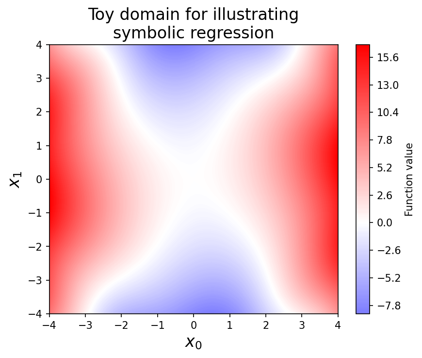
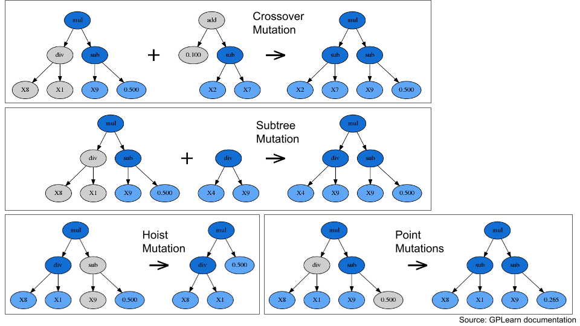
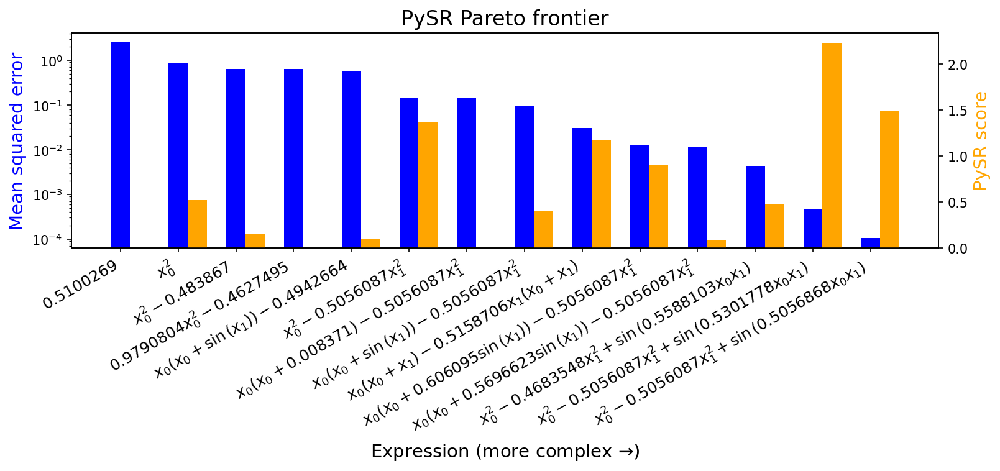
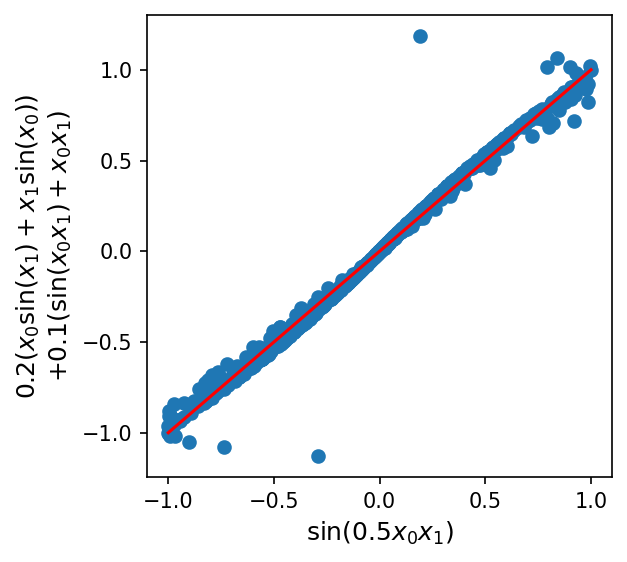

Introduction to Equation Discovery - Comparing Symbolic Regression Methods#
Upto now we have seen that the climate models we developed are using physical equations that are based on our understanding of the physical processes that govern the climate. However, these equations are often complex and difficult to solve, and they can only be used to model the climate at a coarse resolution.
Equation discovery is a different approach that uses machine learning to automatically discover equations that can be used to model the climate. Specifically, equation discovery in climate modeling can be used to:
Automate the process of developing subgrid parameterizations. Subgrid parameterizations are mathematical equations that are used to represent the effects of processes that are too small to be resolved by climate models. These equations are often complex and difficult to develop, but they can be automatically discovered using equation discovery.
Identify relationships between variables that are important for understanding climate change. Machine learning algorithms can learn from large datasets of climate data to identify relationships between variables that are important for understanding climate change.
Develop models that are more interpretable and that can be used to make better decisions about how to mitigate and adapt to climate change. Machine learning algorithms can generate equations that are easier to understand than traditional physical equations. This can help scientists and policymakers to understand how climate models work and to make better decisions about how to mitigate and adapt to climate change.
In this notebook, we’ll review some common techniques for Symbolic Regression (SR), a family of methods of discovering (simple) equations that relate inputs to outputs.
In particular, we’ll cover the following methods:
Symbolic regression based on Genetic Programming
Symbolic regression based on Manually Constructed Library + Sparse Regression
Brief overview of other techniques
%matplotlib inline
import matplotlib.pyplot as plt
import numpy as np
import pysindy as ps
from sklearn.linear_model import Lasso, LinearRegression
from sympy import Number, latex
from rvm import RVR
Data#
When explaining the methods, we’ll consider the following bivariate system:
Although the equation is relatively simple, discovering it from \(x_0\) and \(x_1\) directly is a bit tough, since the \(\sin\) term requires going at least three levels deep in term combinations, and also involves an inner multiplication by a constant (which not all symbolic regression frameworks support).
def toy_function(x):
x0 = x[:, 0]
x1 = x[:, 1]
return x0**2 - 0.5 * x1**2 + np.sin(0.5 * x0 * x1)
def contour(
f, lines=None, linewidths=6, alpha=0.9, linestyles="solid", label=None, **kw
):
grid = np.linspace(-4, 4, 150)
xyg = np.array(np.meshgrid(grid, grid))
X = xyg.reshape(2, -1).T
zg = f(X)
xg, yg = xyg
vlim = np.abs(zg).max()
plt.contourf(xg, yg, zg.reshape(xg.shape), 300, vmin=-vlim, vmax=vlim, cmap="bwr")
plt.colorbar(label=label)
x = np.random.normal(size=(1000, 2))
y = toy_function(x)
plt.figure(dpi=150)
contour(toy_function, label="Function value")
plt.title("Toy domain for illustrating\nsymbolic regression", fontsize=16)
plt.xlabel("$x_0$", fontsize=16)
plt.ylabel("$x_1$", fontsize=16)
plt.show()

Genetic Programming#
Genetic programming is a classic technique in AI, and interest in the idea dates back at least to Alan Turing (who proposes the idea in the same paper that introduces the imitation game, or Turing test).
The general idea is to have a:
“Population” of programs (in our case, possible symbolic expressions, usually represented as trees)
Some notion of individual “fitness” (in our case, how well they model the data, as well as their simplicity)
Some means of applying random “mutations” (e.g. adding a term, deleting a term)

Fig. 6 Some examples for different mutation types#
“Crossover” and “subtree” mutations combine features from multiple candidate equations, imitating the process of genetic recombination from sexual reproduction. “Hoist” and “point” mutations modify individual equations, imitating the process of genetic mutation from, e.g., random errors in DNA replication.
Specific mutations aside, programs can have a limited lifespan, and those with high “fitness” produce more “offspring” (possibly-mutated versions of themselves). However, everything is probabilistic, so programs with lower fitness can still persist. This is critically important, because it allows genetic programming to overcome local minima during optimization.
Note that although genetic programming can be a robust way to solve extremely difficult non-convex optimization problems (as perhaps evidenced by life itself), it also tends to be slow and resource-intensive.
gplearn#
One nicely-documented library for “pure” genetic programming-based symbolic regression is gplearn, which provides a scikit-learn style API and a number of configuration options:
Run gplearn#
import gplearn
import gplearn.genetic
gplearn_sr = gplearn.genetic.SymbolicRegressor(
population_size=5000,
generations=50,
p_crossover=0.7,
p_subtree_mutation=0.1,
p_hoist_mutation=0.05,
p_point_mutation=0.1,
max_samples=0.9,
verbose=1,
parsimony_coefficient=0.01,
function_set=("add", "mul", "sin"),
)
gplearn_sr.fit(x, y)
| Population Average | Best Individual |
---- ------------------------- ------------------------------------------ ----------
Gen Length Fitness Length Fitness OOB Fitness Time Left
0 17.89 7.28733 7 0.509483 0.57878 2.27m
1 7.56 1.02854 9 0.457918 0.543787 1.87m
2 5.79 0.952865 10 0.454597 0.414052 1.67m
3 3.48 0.826402 10 0.441072 0.53577 1.58m
4 3.89 0.806415 10 0.444512 0.545395 1.50m
5 5.00 0.802738 10 0.425926 0.672087 1.53m
6 5.39 0.800018 12 0.41792 0.44537 1.57m
7 5.51 0.799118 12 0.415068 0.471035 1.49m
8 5.69 0.808814 12 0.399308 0.612872 1.44m
9 6.28 0.839739 9 0.406436 0.725072 1.47m
10 7.55 0.910229 12 0.393526 0.664916 1.43m
11 8.93 0.953897 10 0.395085 0.624424 1.42m
12 9.31 0.934491 9 0.386617 0.715029 1.46m
13 9.29 0.934775 10 0.388179 0.686578 1.37m
14 9.09 0.964473 9 0.391131 0.626919 1.32m
15 8.93 0.967934 9 0.39129 0.672979 1.31m
16 8.84 0.957059 9 0.392328 0.616144 1.23m
17 8.98 0.969733 15 0.287317 0.261675 1.19m
18 8.93 0.963665 15 0.278507 0.34097 1.20m
19 9.19 0.966899 19 0.133589 0.14185 1.12m
20 9.78 0.948307 17 0.0997218 0.0976246 1.09m
21 12.22 0.903708 17 0.0641635 0.0797263 1.14m
22 15.17 0.813414 17 0.0434484 0.0495636 1.08m
23 15.72 0.774958 17 0.0408525 0.0729267 1.04m
24 16.22 0.733097 17 0.0367024 0.0461433 1.01m
25 16.84 0.720038 17 0.036402 0.0488474 1.01m
26 16.88 0.713523 17 0.0329497 0.0799179 56.57s
27 16.71 0.727033 17 0.0321097 0.087478 53.83s
28 16.77 0.72303 17 0.0315875 0.0921772 53.28s
29 16.73 0.732061 17 0.0318614 0.089712 48.83s
30 16.77 0.727142 17 0.0306822 0.100325 46.46s
31 16.89 0.74241 17 0.0309386 0.0980177 45.83s
32 16.76 0.733512 17 0.0321191 0.0873929 41.67s
33 16.85 0.726301 17 0.0320795 0.0877496 39.69s
34 16.82 0.731025 17 0.0321401 0.0872038 38.02s
35 16.83 0.742467 17 0.0308843 0.0985066 34.48s
36 16.65 0.725344 17 0.0314413 0.0934933 32.01s
37 16.67 0.721292 17 0.0304254 0.102636 30.39s
38 16.91 0.71514 17 0.0317864 0.0903871 26.85s
39 16.83 0.747309 17 0.0308042 0.099227 24.32s
40 16.84 0.759319 17 0.030962 0.0978069 22.66s
41 16.76 0.717049 17 0.0313776 0.0940664 19.55s
42 16.83 0.727564 17 0.031005 0.0974204 17.15s
43 16.89 0.734867 17 0.0315734 0.0818655 15.23s
44 16.77 0.719568 17 0.0312078 0.0955949 12.30s
45 16.92 0.744083 17 0.0303418 0.0929504 9.84s
46 16.85 0.717582 17 0.0309239 0.0877115 7.64s
47 16.96 0.718758 17 0.0311795 0.0958495 4.90s
48 16.83 0.723699 17 0.0300008 0.106458 2.47s
49 16.75 0.720189 17 0.0308622 0.0882665 0.00s
add(mul(X0, add(mul(X1, 0.464), X0)), mul(add(mul(X1, 0.562), X1), mul(X1, -0.317)))In a Jupyter environment, please rerun this cell to show the HTML representation or trust the notebook.
On GitHub, the HTML representation is unable to render, please try loading this page with nbviewer.org.
add(mul(X0, add(mul(X1, 0.464), X0)), mul(add(mul(X1, 0.562), X1), mul(X1, -0.317)))
Interpret results#
print(gplearn_sr._program)
add(mul(X0, add(mul(X1, 0.464), X0)), mul(add(mul(X1, 0.562), X1), mul(X1, -0.317)))
This looks very close to the right answer, though the constants are slightly off.
[const for const in gplearn_sr._program.program if isinstance(const, float)]
[0.4638872277941424, 0.5623191070916682, -0.31717660187443486]
This is likely because gplearn mutations which add or update constants always pick values by drawing random uniform values (within pre-specified ranges, by default -1 to 1). In my limited experience so far, this is one of the major inefficiencies.
PySR#
PySR is a different library for symbolic regression which, though still based on genetic programming, includes simulated annealing and gradient-free optimization to set the values of constants as well as performance improvements (although accessible via a Python API, the main library is written in Julia for speed). This seems to make it a bit more reliable and precise.
Run PySR#
import pysr
equations = pysr.PySRRegressor(
niterations=5,
binary_operators=["+", "*"], # operators that can combine two terms
unary_operators=["sin"], # operators that modify a single term
)
equations.fit(x, y)
Compiling Julia backend...
Started!
PySRRegressor.equations_ = [ pick score equation \ 0 0.000000 0.51002693 1 0.524111 (x0 * x0) 2 0.155148 ((x0 * x0) + -0.483867) 3 0.000659 (((x0 * x0) + -0.47263688) * 0.9790804) 4 0.096133 ((x0 * (x0 + sin(x1))) + -0.49426636) 5 1.367694 ((x0 * x0) + (-0.5056087 * (x1 * x1))) 6 0.001239 ((x0 * (x0 + 0.008371006)) + (-0.5056087 * (x1... 7 0.409521 (((x0 + sin(x1)) * x0) + (-0.5056087 * (x1 * x... 8 1.179453 (((x0 + x1) * x0) + (-0.5158706 * (x1 * (x1 + ... 9 0.899604 (((x0 + (sin(x1) * 0.60609496)) * x0) + (-0.50... 10 0.085774 (((x0 + (sin(x1) * sin(0.60609496))) * x0) + (... 11 0.480681 (((x0 * x0) + (-0.4683548 * (x1 * x1))) + sin(... 12 2.227889 (((x0 * x0) + (-0.5056087 * (x1 * x1))) + sin(... 13 >>>> 1.494981 (((x0 * x0) + (-0.5056087 * (x1 * x1))) + sin(... loss complexity 0 2.500655 1 1 0.876631 3 2 0.642771 5 3 0.641925 7 4 0.583089 8 5 0.148509 9 6 0.148142 11 7 0.098361 12 8 0.030241 13 9 0.012300 14 10 0.011289 15 11 0.004317 17 12 0.000465 18 13 0.000104 19 ]In a Jupyter environment, please rerun this cell to show the HTML representation or trust the notebook.
On GitHub, the HTML representation is unable to render, please try loading this page with nbviewer.org.
PySRRegressor.equations_ = [ pick score equation \ 0 0.000000 0.51002693 1 0.524111 (x0 * x0) 2 0.155148 ((x0 * x0) + -0.483867) 3 0.000659 (((x0 * x0) + -0.47263688) * 0.9790804) 4 0.096133 ((x0 * (x0 + sin(x1))) + -0.49426636) 5 1.367694 ((x0 * x0) + (-0.5056087 * (x1 * x1))) 6 0.001239 ((x0 * (x0 + 0.008371006)) + (-0.5056087 * (x1... 7 0.409521 (((x0 + sin(x1)) * x0) + (-0.5056087 * (x1 * x... 8 1.179453 (((x0 + x1) * x0) + (-0.5158706 * (x1 * (x1 + ... 9 0.899604 (((x0 + (sin(x1) * 0.60609496)) * x0) + (-0.50... 10 0.085774 (((x0 + (sin(x1) * sin(0.60609496))) * x0) + (... 11 0.480681 (((x0 * x0) + (-0.4683548 * (x1 * x1))) + sin(... 12 2.227889 (((x0 * x0) + (-0.5056087 * (x1 * x1))) + sin(... 13 >>>> 1.494981 (((x0 * x0) + (-0.5056087 * (x1 * x1))) + sin(... loss complexity 0 2.500655 1 1 0.876631 3 2 0.642771 5 3 0.641925 7 4 0.583089 8 5 0.148509 9 6 0.148142 11 7 0.098361 12 8 0.030241 13 9 0.012300 14 10 0.011289 15 11 0.004317 17 12 0.000465 18 13 0.000104 19 ]
Interpret results#
def round_expr(expr, num_digits=4):
return expr.xreplace({n: round(n, num_digits) for n in expr.atoms(Number)})
round_expr(equations.sympy())
It looks like PySR is able to not only discover the correct equation, but also format it for us nicely.
In addition, it saves a Pareto frontier of possible expressions of varying complexities, which had the lowest error of any other equations of equal or lesser complexity (with a configurable trade-off rule):
equations.equations_
| complexity | loss | score | equation | sympy_format | lambda_format | |
|---|---|---|---|---|---|---|
| 0 | 1 | 2.500655 | 0.000000 | 0.51002693 | 0.510026930000000 | PySRFunction(X=>0.510026930000000) |
| 1 | 3 | 0.876631 | 0.524111 | (x0 * x0) | x0**2 | PySRFunction(X=>x0**2) |
| 2 | 5 | 0.642771 | 0.155148 | ((x0 * x0) + -0.483867) | x0**2 - 0.483867 | PySRFunction(X=>x0**2 - 0.483867) |
| 3 | 7 | 0.641925 | 0.000659 | (((x0 * x0) + -0.47263688) * 0.9790804) | 0.9790804*x0**2 - 0.462749505525152 | PySRFunction(X=>0.9790804*x0**2 - 0.4627495055... |
| 4 | 8 | 0.583089 | 0.096133 | ((x0 * (x0 + sin(x1))) + -0.49426636) | x0*(x0 + sin(x1)) - 0.49426636 | PySRFunction(X=>x0*(x0 + sin(x1)) - 0.49426636) |
| 5 | 9 | 0.148509 | 1.367694 | ((x0 * x0) + (-0.5056087 * (x1 * x1))) | x0**2 - 0.5056087*x1**2 | PySRFunction(X=>x0**2 - 0.5056087*x1**2) |
| 6 | 11 | 0.148142 | 0.001239 | ((x0 * (x0 + 0.008371006)) + (-0.5056087 * (x1... | x0*(x0 + 0.008371006) - 0.5056087*x1**2 | PySRFunction(X=>x0*(x0 + 0.008371006) - 0.5056... |
| 7 | 12 | 0.098361 | 0.409521 | (((x0 + sin(x1)) * x0) + (-0.5056087 * (x1 * x... | x0*(x0 + sin(x1)) - 0.5056087*x1**2 | PySRFunction(X=>x0*(x0 + sin(x1)) - 0.5056087*... |
| 8 | 13 | 0.030241 | 1.179453 | (((x0 + x1) * x0) + (-0.5158706 * (x1 * (x1 + ... | x0*(x0 + x1) - 0.5158706*x1*(x0 + x1) | PySRFunction(X=>x0*(x0 + x1) - 0.5158706*x1*(x... |
| 9 | 14 | 0.012300 | 0.899604 | (((x0 + (sin(x1) * 0.60609496)) * x0) + (-0.50... | x0*(x0 + 0.60609496*sin(x1)) - 0.5056087*x1**2 | PySRFunction(X=>x0*(x0 + 0.60609496*sin(x1)) -... |
| 10 | 15 | 0.011289 | 0.085774 | (((x0 + (sin(x1) * sin(0.60609496))) * x0) + (... | x0*(x0 + 0.569662342020733*sin(x1)) - 0.505608... | PySRFunction(X=>x0*(x0 + 0.569662342020733*sin... |
| 11 | 17 | 0.004317 | 0.480681 | (((x0 * x0) + (-0.4683548 * (x1 * x1))) + sin(... | x0**2 - 0.4683548*x1**2 + sin(0.55881028814444... | PySRFunction(X=>x0**2 - 0.4683548*x1**2 + sin(... |
| 12 | 18 | 0.000465 | 2.227889 | (((x0 * x0) + (-0.5056087 * (x1 * x1))) + sin(... | x0**2 - 0.5056087*x1**2 + sin(0.53017783278419... | PySRFunction(X=>x0**2 - 0.5056087*x1**2 + sin(... |
| 13 | 19 | 0.000104 | 1.494981 | (((x0 * x0) + (-0.5056087 * (x1 * x1))) + sin(... | x0**2 - 0.5056087*x1**2 + sin(0.50568676859399... | PySRFunction(X=>x0**2 - 0.5056087*x1**2 + sin(... |
equations.equations_.loss
0 2.500655
1 0.876631
2 0.642771
3 0.641925
4 0.583089
5 0.148509
6 0.148142
7 0.098361
8 0.030241
9 0.012300
10 0.011289
11 0.004317
12 0.000465
13 0.000104
Name: loss, dtype: float64
plt.figure(figsize=(12, 3), dpi=150)
plt.bar(
np.arange(len(equations.equations_)),
equations.equations_.loss,
width=0.33,
color="blue",
)
plt.yscale("log")
plt.ylabel("Mean squared error", fontsize=14, color="blue")
plt.xticks(
range(len(equations.equations_)),
[f"${latex(round_expr(v,7))}$" for v in equations.equations_.sympy_format],
rotation=30,
ha="right",
fontsize=12,
)
plt.title("PySR Pareto frontier", fontsize=16)
plt.xlabel("Expression (more complex $\\to$)", fontsize=14)
ax2 = plt.twinx()
ax2.bar(
np.arange(len(equations.equations_)) + 0.33,
equations.equations_.score,
width=0.33,
color="orange",
)
ax2.set_ylabel("PySR score", color="orange", fontsize=14)
plt.show()

Manually Constructed Library + Sparse Regression#
Another approach to performing symbolic regression is to
Hand-construct a library of basis functions (e.g. by recursively combining all terms with various operations)
Run sparse linear regression to extract a small set of basis functions
This approach works well for problems where any constants in the underlying formula can be extracted out to the outermost level (so they can be determined by linear regression). It also works well when we have domain knowledge about which terms could potentially appear in the final sum.
It does not work well in cases where constants can’t be pulled outside certain operations (e.g. in this case, with the sine operator, though powers and derivatives are generally fine). This method can also struggle when basis function values are highly correlated, though it depends on the sparse regression method.
Let’s create an augmentation function which takes an array of features and adds additional basis functions by combining them with binary multiplication and unary sine operations:
def augment(feats, names):
existing = set(names)
new_feats = []
new_names = []
for i in range(feats.shape[1]):
name = f"sin({names[i]})"
if name not in existing:
new_feats.append(np.sin(feats[:, i]))
new_names.append(name)
for j in range(i, feats.shape[1]):
name = f"mul({names[i]}, {names[j]})"
if name not in existing:
new_feats.append(feats[:, i] * feats[:, j])
new_names.append(name)
return np.hstack((feats, np.array(new_feats).T)), names + new_names
def repeatedly_augment(feats, names=None, depth=2):
if names is None:
names = [f"x{i}" for i in range(len(feats))]
for _ in range(depth):
feats, names = augment(feats, names)
return feats, names
feats, names = repeatedly_augment(np.array(x), ["x0", "x1"], depth=2)
Applying this twice brings us from 2 features up to 37:
feats.shape
(1000, 37)
We can see that the complexity of this approach starts to blow up exponentially, though, as we increase the maximum depth of an expression:
augment(feats, names)[0].shape
(1000, 742)
augment(*augment(feats, names))[0].shape
(1000, 276397)
If we need arbitrary polynomials of up to 4th order, we end up with orders of magnitude more features than samples, which will cause problems.
Note that since this method lacks the ability to apply operations with constants within other operations, \(\sin(0.5 x_0 x_1)\) isn’t present in any of these possible sets, though \(\sin(x_0 x_1)\) is.
Let’s now see how different methods for (sparse) linear regression perform on this task:
def learned_expr(coef, names, cutoff=1e-2):
coef_idx = np.argwhere(np.abs(coef) > cutoff)[:, 0]
sort_order = reversed(np.argsort(np.abs(coef[coef_idx])))
return " + ".join(
[f"{coef[coef_idx[i]]:.4f}*{names[coef_idx[i]]}" for i in sort_order]
)
Linear regression#
We can start with completely unregularized linear regression, which will find the linear combination of basis terms that minimizes mean squared error (to high precision, due to the convexity of the problem and an analytic way of solving it).
linreg = LinearRegression()
linreg.fit(feats, y)
learned_expr(linreg.coef_, names)
'1.0126*mul(x0, x0) + -0.8495*mul(sin(x0), sin(x1)) + 0.7011*mul(x0, sin(x1)) + 0.7010*mul(x1, sin(x0)) + -0.5215*mul(x1, x1) + -0.4077*x1 + 0.3517*sin(x1) + -0.0881*mul(x0, x1) + 0.0561*sin(sin(x1)) + 0.0419*mul(x1, mul(x1, x1)) + 0.0339*x0 + 0.0325*mul(sin(x1), mul(x1, x1)) + 0.0281*sin(mul(x0, x1)) + 0.0266*mul(x1, sin(x1)) + -0.0209*mul(x0, sin(x0)) + -0.0180*sin(sin(x0)) + -0.0174*mul(mul(x0, x1), mul(x1, x1)) + -0.0174*mul(mul(x0, x0), mul(x0, x1)) + -0.0170*sin(x0) + 0.0104*mul(sin(x0), sin(x0))'
Unfortunately, this doesn’t seem to give us a very sparse solution in this case.
L1-regularized linear regression (LASSO)#
A common way to make linear regression return more sparse solutions is to minimize a linear combination of the mean squared error and the sum of the magnitudes of the weights. This is called applying an “L1 penalty” since it is the L1-norm of the weight vector, and is also referred to as the “Least Absolute Shrinkage and Selection Operator”, or LASSO. From a Bayesian perspective, this corresponds to doing Bayesian linear regression with a Laplace or double-exponential prior on the weights.
Note that although this penalty does tend to encourage sparsity, it’s also meant as a regularizer, which can help with the presence of noise.
lasso = Lasso(alpha=0.01)
lasso.fit(feats, y)
learned_expr(lasso.coef_, names)
'0.9794*mul(x0, x0) + -0.4857*mul(x1, x1) + 0.2943*mul(x0, x1) + 0.1694*sin(mul(x0, x1)) + 0.0509*mul(x1, sin(x0)) + -0.0122*mul(mul(x0, x1), mul(x1, x1)) + 0.0102*mul(x0, mul(x1, x1))'
Here, LASSO ends up doing a pretty good job finding the first two terms of the ground-truth model (\(x_0^2 - 0.5x_1^2\)), with an approximation of the remaining \(\sin(0.5 x_0 x_1)\) term as \( 0.2(x_0\sin(x_1)+x_1\sin(x_0)) + 0.1(\sin(x_0 x_1) + x_0x_1)\):
plt.figure(figsize=(4, 4), dpi=150)
x0 = x[:, 0]
x1 = x[:, 1]
sin = np.sin
plt.scatter(
sin(0.5 * x0 * x1),
0.2 * (x0 * sin(x1) + x1 * sin(x0)) + 0.1 * (sin(x0 * x1) + x0 * x1),
)
plt.plot([-1, 1], [-1, 1], color="red")
plt.xlabel(r"$\sin(0.5 x_0 x_1)$", fontsize=12)
plt.ylabel(
r"$0.2(x_0\sin(x_1)+x_1\sin(x_0))$" + "\n" + r"$+ 0.1(\sin(x_0 x_1) + x_0x_1)$",
fontsize=12,
)
plt.show()

Relevance vector machines (RVM)#
Relevance vector machines, used by Zanna and Bolton 2020 for equation discovery, provide another way of learning sparse linear models in a Bayesian manner, though with a different prior that prioritizes sparsity over shrinkage when the data permits it. RVMs can also be used with a kernel trick to learn nonlinear decision boundaries which are sparse in a kernelized feature space, though in this case, we use a linear kernel on top of our manually computed library features.
rvm = RVR(verbose=False)
rvm.fit(feats, y, names)
learned_expr(rvm.m_, rvm.labels)
'1.0014*mul(x0, x0) + -0.8472*mul(sin(x0), sin(x1)) + 0.7034*mul(x1, sin(x0)) + 0.7020*mul(x0, sin(x1)) + -0.5293*mul(x1, x1) + -0.0943*mul(x0, x1) + 0.0350*mul(x1, sin(x1)) + 0.0290*sin(mul(x0, x1)) + -0.0170*mul(mul(x0, x1), mul(x1, x1)) + -0.0168*mul(mul(x0, x0), mul(x0, x1))'
RVM does discover the \(x_0^2\) and \(-0.5x_1^2\) terms almost exactly, but ends up with an even more complex approximate expression for the missing \(\sin(0.5x_0x_1)\) term.
Sequentially Thresholded Least Squares (STLSQ) from pysindy#
The PySINDy library provides a number of efficient Python implementations of sparse regression algorithms. Their default regression method is sequentially thresholded least squares (STLSQ), which (as its name might suggest) repeatedly runs L2-regularized linear regression with penalty strength alpha and prunes features with weight magnitudes below a given threshold.
stlsq = ps.optimizers.stlsq.STLSQ(alpha=0.0001, threshold=0.1)
stlsq.fit(feats, y)
learned_expr(stlsq.coef_[0], names)
'0.9980*mul(x0, x0) + -0.5003*mul(x1, x1) + 0.3244*mul(x0, sin(x1)) + 0.2747*mul(x1, sin(x0))'
This method ends up finding a sparser solution than Lasso, though I did tweak the parameters a bit to make that happen :)
It’s worth checking out PySINDy’s full suite of sparse regression methods for other approaches!
Overall, all of these methods were able to find the \(x_0^2\) and \(-0.5x_1^2\) terms, but all of them also needed to find approximations for the remaining term because it wasn’t in the feature library. Meaning the expressions are both less accurate and more complex.
Tweaking the Feature Library#
Now, we can potentially resolve some of these issues by pre-multiplying \(x_1\) by 0.5 before the augmentation process (which we’ll call \(x_{1h}\)).
feats2 = np.array(x)
feats2[:, 1] = feats2[:, 1] * 0.5
names2 = ["x0", "x1h"]
depth = 2
for _ in range(depth):
feats2, names2 = augment(feats2, names2)
In this case, the correct model should be expressed as
which is now a linear combination of our basis terms. Let’s see if these regression techniques can find it:
linreg = LinearRegression()
linreg.fit(feats2, y)
learned_expr(linreg.coef_, names2)
'-2.0000*mul(x1h, x1h) + 1.0000*mul(x0, x0) + 1.0000*sin(mul(x0, x1h))'
lasso = Lasso(alpha=0.01)
lasso.fit(feats2, y)
learned_expr(lasso.coef_, names2)
'-1.8094*mul(x1h, x1h) + 0.9777*mul(x0, x0) + 0.8831*sin(mul(x0, x1h)) + -0.0736*mul(mul(x1h, x1h), mul(x1h, x1h)) + 0.0153*mul(x0, x1h) + 0.0111*mul(mul(x0, x0), mul(x0, x1h))'
rvm = RVR(verbose=False)
rvm.fit(feats2, y, names2)
learned_expr(rvm.m_, rvm.labels)
'-2.0000*mul(x1h, x1h) + 1.0000*mul(x0, x0) + 1.0000*sin(mul(x0, x1h))'
stlsq = ps.optimizers.stlsq.STLSQ(alpha=0.0001, threshold=0.1)
stlsq.fit(feats2, y)
learned_expr(stlsq.coef_[0], names2)
'-2.0000*mul(x1h, x1h) + 1.0000*mul(x0, x0) + 1.0000*sin(mul(x0, x1h))'
In this case, every method except Lasso finds the true model exactly (which held true across many choices of regularization parameter).
Handling noise#
What if we add noise to the data?
noise = np.random.normal(size=feats2.shape) * 0.01
linreg = LinearRegression()
linreg.fit(feats2 + noise, y)
learned_expr(linreg.coef_, names2)
'0.9740*sin(mul(x0, x1h)) + 0.8437*mul(x0, x0) + -0.5908*mul(sin(x1h), sin(x1h)) + -0.5258*mul(x1h, sin(x1h)) + -0.5202*mul(x1h, x1h) + -0.3425*sin(mul(x1h, x1h)) + -0.3326*mul(mul(x1h, x1h), mul(x1h, x1h)) + 0.2636*mul(x0, sin(x0)) + 0.1345*mul(x1h, sin(x0)) + -0.1273*mul(sin(x0), sin(x0)) + -0.0751*sin(x1h) + -0.0692*mul(x0, sin(x1h)) + 0.0628*sin(sin(x1h)) + -0.0395*mul(sin(x0), sin(x1h)) + 0.0261*sin(x0) + -0.0215*mul(mul(x0, x1h), mul(x1h, x1h)) + 0.0157*mul(mul(x0, x0), mul(x0, x0)) + -0.0145*sin(sin(x0)) + 0.0140*mul(x0, mul(x1h, x1h)) + 0.0122*x1h + -0.0121*mul(x1h, mul(x0, x0)) + -0.0112*mul(x1h, mul(x0, x1h)) + -0.0108*x0 + 0.0102*mul(mul(x0, x0), mul(x0, x1h))'
lasso = Lasso(alpha=0.01)
lasso.fit(feats2 + noise, y)
learned_expr(lasso.coef_, names2)
'-1.8008*mul(x1h, x1h) + 0.9766*mul(x0, x0) + 0.8859*sin(mul(x0, x1h)) + -0.0773*mul(mul(x1h, x1h), mul(x1h, x1h)) + 0.0141*mul(x0, x1h) + 0.0103*mul(mul(x0, x0), mul(x0, x1h))'
rvm = RVR(verbose=False)
rvm.fit(feats2 + noise, y, names2)
learned_expr(rvm.m_, rvm.labels)
'0.9871*sin(mul(x0, x1h)) + 0.8800*mul(x0, x0) + -0.5844*mul(sin(x1h), sin(x1h)) + -0.5282*mul(x1h, x1h) + -0.5244*mul(x1h, sin(x1h)) + -0.3410*sin(mul(x1h, x1h)) + -0.3307*mul(mul(x1h, x1h), mul(x1h, x1h)) + 0.1989*mul(x0, sin(x0)) + -0.0903*mul(sin(x0), sin(x0)) + 0.0639*mul(x1h, sin(x0)) + -0.0462*mul(x0, sin(x1h)) + 0.0121*mul(mul(x0, x0), mul(x0, x0)) + -0.0104*mul(mul(x0, x1h), mul(x1h, x1h))'
stlsq = ps.optimizers.stlsq.STLSQ(alpha=0.0001, threshold=0.1)
stlsq.fit(feats2 + noise, y)
learned_expr(stlsq.coef_[0], names2)
'1.0011*sin(mul(x0, x1h)) + 0.9996*mul(x0, x0) + -0.5828*mul(sin(x1h), sin(x1h)) + -0.5531*mul(x1h, sin(x1h)) + -0.5396*mul(x1h, x1h) + -0.3227*mul(mul(x1h, x1h), mul(x1h, x1h)) + -0.3104*sin(mul(x1h, x1h))'
In this case, it actually becomes Lasso which gets closest to the true model (i.e. is the only regression technique whose first three leading terms match the ground-truth model). This reversal illustrates how noise can strongly impact the effectiveness of different methods for learning symbolic models.
Let’s see how genetic programming-based techniques deal with noise.
noisy_equations = pysr.PySRRegressor(
niterations=5,
binary_operators=["+", "*"], # operators that can combine two terms
unary_operators=["sin"], # operators that modify a single term
)
noisy_equations.fit(x, y + np.random.normal(size=y.shape));
Started!
noisy_equations.equations_
| complexity | loss | score | equation | sympy_format | lambda_format | |
|---|---|---|---|---|---|---|
| 0 | 1 | 3.370507 | 0.000000 | 0.5166526 | 0.516652600000000 | PySRFunction(X=>0.516652600000000) |
| 1 | 3 | 1.761062 | 0.324573 | (x0 * x0) | x0**2 | PySRFunction(X=>x0**2) |
| 2 | 5 | 1.533560 | 0.069162 | ((x0 * x0) + -0.4770283) | x0**2 - 0.4770283 | PySRFunction(X=>x0**2 - 0.4770283) |
| 3 | 7 | 1.533165 | 0.000129 | (((x0 * x0) * 0.9893938) + -0.48804277) | 0.9893938*x0**2 - 0.48804277 | PySRFunction(X=>0.9893938*x0**2 - 0.48804277) |
| 4 | 8 | 1.446755 | 0.058011 | (((sin(x1) + x0) * x0) + -0.48804277) | x0*(x0 + sin(x1)) - 0.48804277 | PySRFunction(X=>x0*(x0 + sin(x1)) - 0.48804277) |
| 5 | 9 | 1.102422 | 0.271813 | ((x0 * x0) + ((-0.4773009 * x1) * x1)) | x0**2 - 0.4773009*x1**2 | PySRFunction(X=>x0**2 - 0.4773009*x1**2) |
| 6 | 11 | 1.101057 | 0.000620 | ((x0 * (x0 + 0.094528876)) + ((-0.4773009 * x1... | x0*(x0 + 0.094528876) - 0.4773009*x1**2 | PySRFunction(X=>x0*(x0 + 0.094528876) - 0.4773... |
| 7 | 12 | 1.025059 | 0.071520 | (((x0 + sin(x1)) * x0) + ((-0.4773009 * x1) * ... | x0*(x0 + sin(x1)) - 0.4773009*x1**2 | PySRFunction(X=>x0*(x0 + sin(x1)) - 0.4773009*... |
| 8 | 13 | 0.973814 | 0.051286 | ((x0 * x0) + (-0.5184176 * ((x1 + (-0.7328934 ... | x0**2 - 0.5184176*x1*(-0.7328934*x0 + x1) | PySRFunction(X=>x0**2 - 0.5184176*x1*(-0.73289... |
| 9 | 14 | 0.968967 | 0.004989 | ((x0 * x0) + (sin(-0.51313025) * ((x1 + (-0.73... | x0**2 - 0.490906759224653*x1*(-0.7328934*x0 + x1) | PySRFunction(X=>x0**2 - 0.490906759224653*x1*(... |
| 10 | 15 | 0.962623 | 0.006568 | ((x0 * (x0 + sin(sin(sin(sin(x1)))))) + (-0.47... | x0*(x0 + sin(sin(sin(sin(x1))))) - 0.4772476*x... | PySRFunction(X=>x0*(x0 + sin(sin(sin(sin(x1)))... |
| 11 | 16 | 0.962392 | 0.000241 | ((x0 * (x0 + sin(sin(sin(sin(sin(x1))))))) + (... | x0*(x0 + sin(sin(sin(sin(sin(x1)))))) - 0.5184... | PySRFunction(X=>x0*(x0 + sin(sin(sin(sin(sin(x... |
| 12 | 17 | 0.950755 | 0.012165 | (((x0 + (sin(sin(x1)) * 0.59224606)) * x0) + (... | x0*(x0 + 0.59224606*sin(sin(x1))) - 0.47547710... | PySRFunction(X=>x0*(x0 + 0.59224606*sin(sin(x1... |
round_expr(noisy_equations.sympy())
noisy_equations.equations_.sympy_format.values[-4]
It looks like PySR was still able to discover the true expression as part of its Pareto frontier, though with the noise it’s only rated third-best for the default tradeoff between complexity and performance (with a sin-less version taking first).
Other Methods for Symbolic Regression#
To finish the notebook, here are a few other techniques for symbolic regression that don’t fit under either previously described methods (and all developed in the last several years):
STreCH (Julia implementation here) formulates symbolic regression as a non-convex mixed-integer nonlinear programming (MINLP) technique, which it solves using a heuristic-guided cutting plane formulation.
EQL (Python implementation here) develops “equation layers” for neural networks which can be readily interpreted and also chained together, and are regularized with a thresholded L1 penalty to encourage sparsity.
AI Feynman (hybrid Python-Fortran implementation here) starts by training a neural network, then computes input gradients of the learned network, and then uses attributes of those gradients to decompose the symbolic regression problem into something more tractable using graph theory.
Symbolic Metamodeling (Python implementation here) uses gradient descent to learn compositions of Meijer-G functions, a flexible family that can be programmatically projected back onto a wide set of analytic, closed-form, or even algebriac expressions.